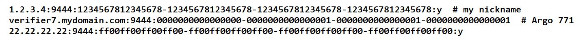
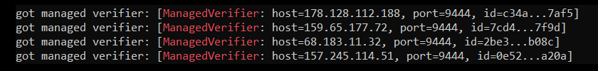
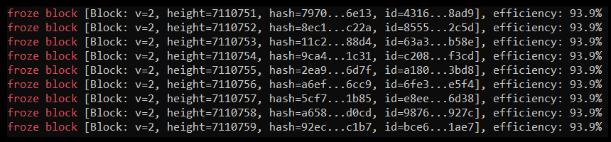
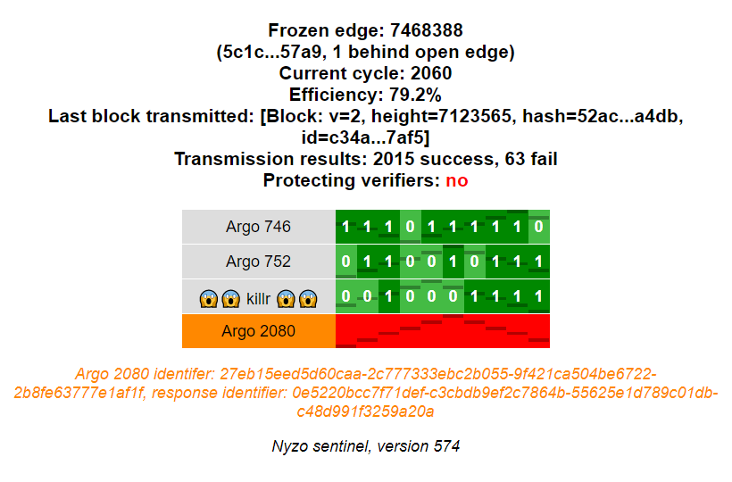

The Nyzo sentinel is a run mode provided by the Nyzo verifier codebase. The following instructions are for an Ubuntu Linux system, but the client will also run on Windows, Mac OS, and other Linux distributions.
If you want to activate web endpoints, ensure that your server has the proper port open to all IP addresses to which you want to permit access. The default port is 80 for HTTP and 443 for HTTPS, but other ports can be used, as is explained later in these instructions.
Begin the installation by updating apt.
sudo apt update
Next, install haveged. This is a program that provides entropy for cryptographically secure random-number generators. The Verifier class loads its private seed in a static block, and lack of sufficient entropy on a system can cause the application to block indefinitely when trying to generate a new private seed for the verifier. The verifier's key is used to by default to sign all Nyzo messages originating from the client.
While the sentinel signs most messages with the keys of its various managed verifiers, the Verifier class must still have a valid key in order for the sentinel to function properly.
sudo apt install haveged -y
Install the Java development kit (JDK). JDK 8 is preferred for Nyzo.
sudo apt install openjdk-8-jdk -y
Install supervisor. This is used to manage the sentinel as a background process.
sudo apt install supervisor -y
Clone the Nyzo verifier repository.
git clone https://github.com/n-y-z-o/nyzoVerifier.git
Change to the new nyzoVerifier directory and build the code.
cd nyzoVerifier && ./gradlew build
Make the Nyzo data root directory.
sudo mkdir -p /var/lib/nyzo/production
Copy the trusted entry points file to the data root directory.
sudo cp trusted_entry_points /var/lib/nyzo/production
Create the supervisor configuration file. The first command makes the script executable. The second command runs the script to generate the file. The third command copies the file to the supervisor configuration directory.
chmod +x nyzoSentinel.sh && ./nyzoSentinel.sh && sudo cp nyzoSentinel.conf /etc/supervisor/conf.d/
If you want to use the web listener and you want to use a port other than 80, add the appropriate line to /var/lib/nyzo/production/preferences. For example, if you wanted to use port 8080 for all run modes, you would add this line:
web_port=8080
If you wanted to use port 603 for just the sentinel, you would add the following line:
web_port_sentinel=603
Now, you need to create the file that tells the sentinel which verifiers to manage. This file needs to be created at /var/lib/nyzo/production/managed_verifiers. Use your favorite text editor to create this file on the instance, or create the file on your computer and copy it to your instance using a tool like scp. Each line in the file should contain the following information for one managed verifier, separated by colons:
If the sentinel transaction flag is included and the value is “y” or “Y”, a µ1 transaction will be added to any block produced for that verifier. This transaction will have “block produced by Nyzo sentinel” in the sender-data field. This transaction is entirely optional. This option was added mostly for entertainment value; it is not intended to be a penalty or fee. It is optional, and the default behavior of the sentinel is omission of this transaction.
The following shows how the managed_verifiers file might look:
To start the sentinel, reload supervisor.
sudo supervisorctl reload
If you want to see the output of the sentinel process to ensure it started properly, you can watch the output of the log file:
tail -f /var/log/nyzo-sentinel.log
You can use the key combination control-c to stop displaying the output of the log file.
To ensure that your verifiers have loaded properly, run the following command:
more /var/log/nyzo-sentinel.log | grep 'ManagedVerifier'
The output should look something like this, with one line for each verifier you specified in the managed_verifiers file:
To ensure that the sentinel is tracking the blockchain, run the following command:
tail -f /var/log/nyzo-sentinel.log | grep 'froze block'
The output should look something like this:
If you watch the output of this command, you should see the block height increasing quickly on a new sentinel. Within about 10 minutes, depending on the network performance of your sentinel and the verifiers it manages, the block height should be very close to the frozen edge height displayed on the Nyzo mesh page. At this point, your sentinel should be protecting the verifiers it manages.
You can use the key combination control-c to stop displaying the output of the log file.
The sentinel also provides a web monitoring interface. To activate the interface, place the following line in /var/lib/nyzo/production/preferences.
start_web_listener=1
The web interface displays summary information about the sentinel and a row for each managed verifier.

The verifier name displays with a dark gray background if it was queried in the last query interval. It displays with in a light gray background if it was not queried. If the key for the verifier is incorrect, the verifier name displays with an orange background.
When a verifier key is incorrect, a message is also displayed below the grid to explain the problem.
Each cell in the grid represents a single request to a verifier. The more recent requests are to the left, and the older requests are to the right. The darkened lines on the cell do not communicate value. They are used to show motion of the cells when all the cells in a row have the same status.
Light green cells indicate responses that appeared to be fine but did not include blocks. Dark green cells indicate valid responses that contained blocks. The number in the cell denotes how many blocks were provided in a response. A red cell indicates an error for the request — either no response was received or the response was invalid.
These instructions are in progress. While the above instructions are sufficient for configuring a sentinel, these instructions will be modified to contain more tips on ensuring that the sentinel is operating properly.